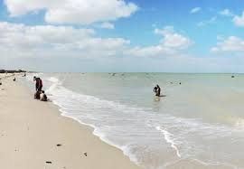

Se trata de una hermosa playa poco concurrida, no por ser un lugar sin atributos, sino porque pocos turistas se adentran a esta zona y prefieren escoger las playas principales o más conocidas de Riohacha – Guajira. Mayapo es de esos lugares que vale la pena ir a conocer; un balneario de nativos y turistas, que al ser un lugar poco visitado, se convierte en una playa muy limpia y extremadamente tranquila.
Su arena totalmente blanca y fina, su mar de aguas cristalinas en diferentes tonos verdes, es el sitio escogido por muchos para tomar hermosas fotos y tener así un recuerdo envidiable de esta playa única.
A solo 20 minutos de Riohacha se encuentra este paraíso entre las playas y la cultura de los indígenas wayúu. En este blog te diremos todo lo que necesitas saber para disfrutar éste destino turístico y enamorarte de los paisajes de Colombia.

Lo primero que notarás es a los indígenas Wayúu que están a lo largo de la playa ofreciendo sus trabajos artesanales, los cuales son muy famosos y buscados por los extranjeros, pues son obras de arte ambulantes únicas y llaman mucho la atención en otros países.
Las mochilas oscilan entre los 100.000 y 200.000 pesos según el tipo de tejido o forma elaborada.
También te ofrecerán hermosos collares elaborados con piedras típicas de su etnia, muchas llamadas “de aseguranza o protección”, al ponerlas a sus clientes los indígenas realizan un rezo para pedir por la protección de esa persona, mientras porte ese accesorio.
Referencias
Mayapo, todo lo que necesitas saber para disfrutar éste destino turístico en la Guajira